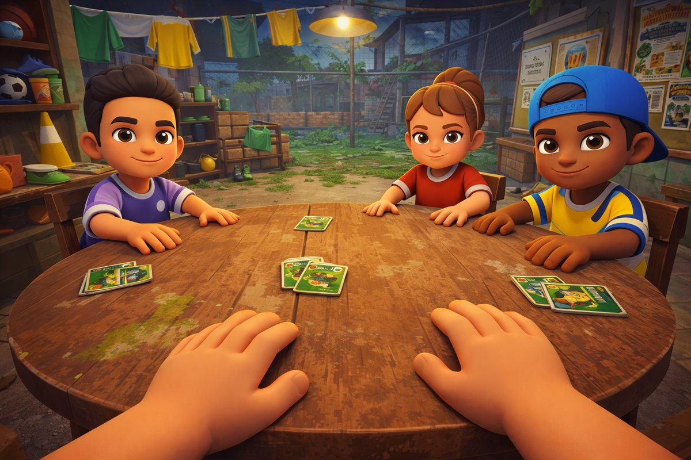
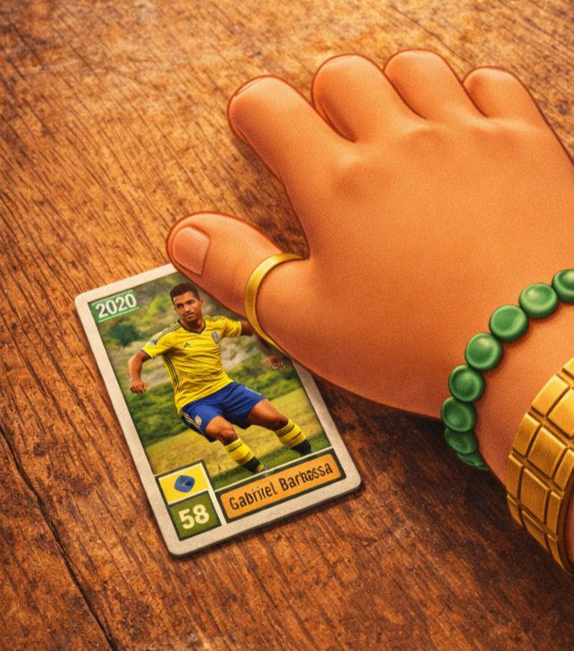
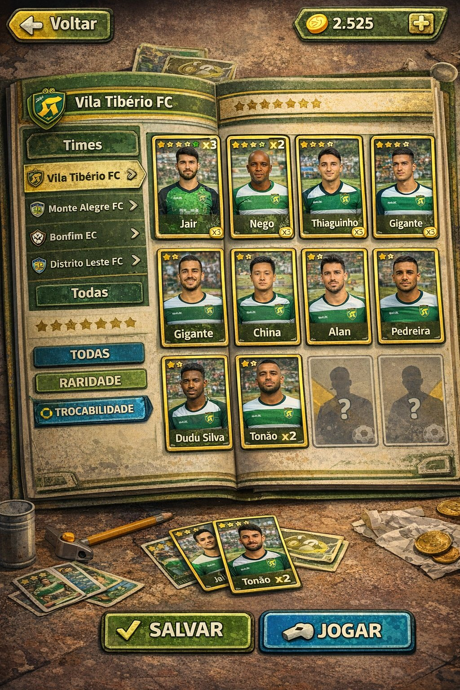
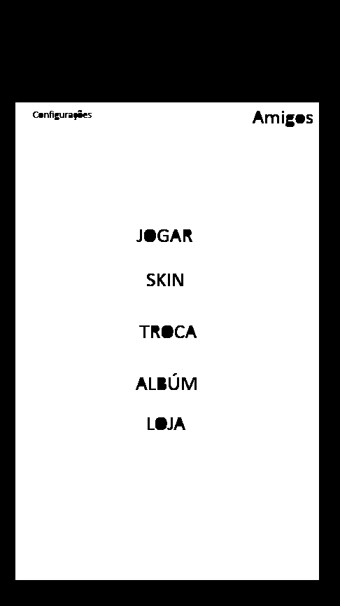
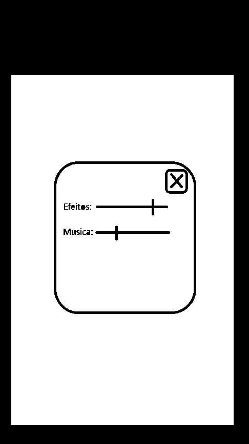
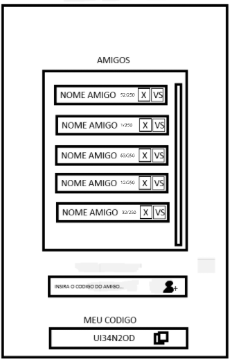
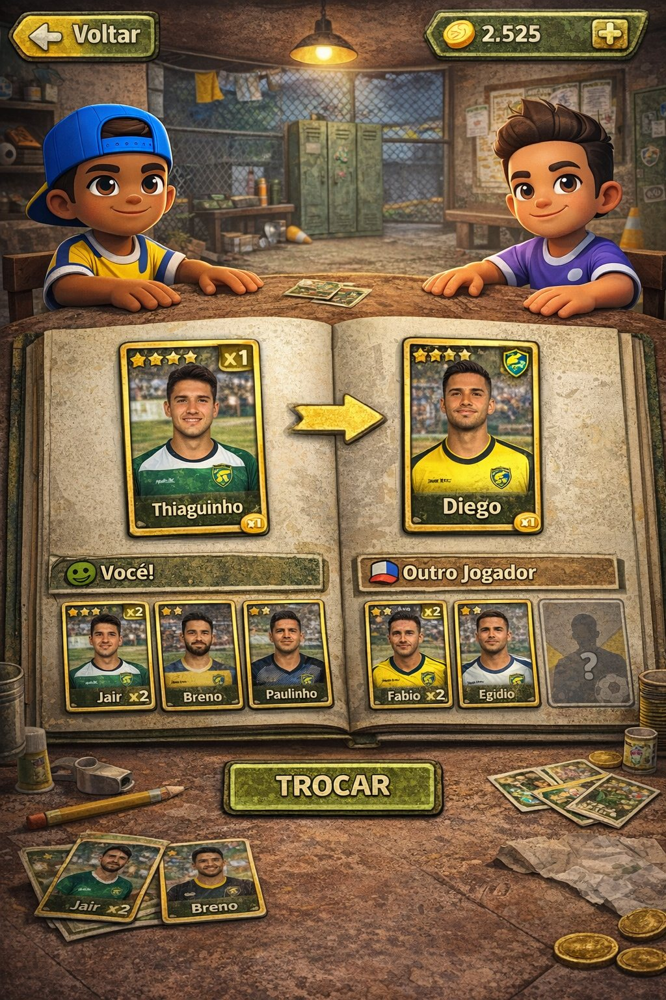
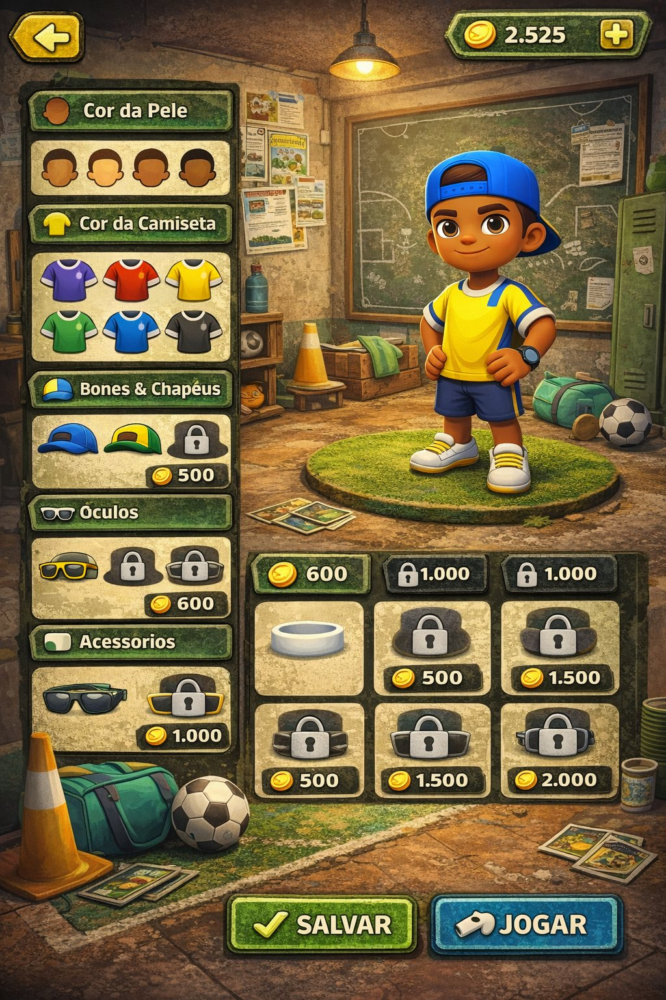
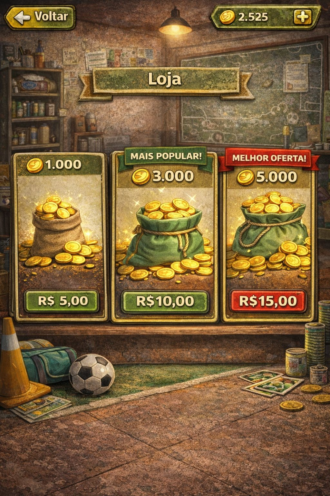
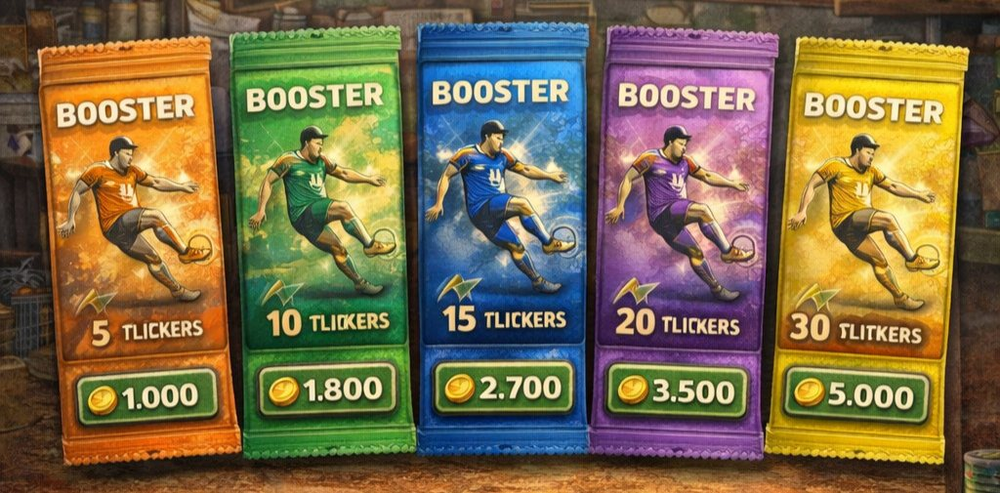

Como usar este documento
Leia inteiro uma vez. Depois use o filtro no topo da página para ver só as suas tarefas.
O documento tem duas metades. Da seção 01 à 10 está o que o jogo é — a regra, a tela, o número, a arquitetura. Essa parte é a fonte da verdade: se o jogo na tela não bate com o que está escrito aqui, ou o jogo está errado ou o documento precisa ser corrigido; nunca os dois em silêncio. Da 11 à 15 está como vamos construir — o cronograma semana a semana, os padrões de arquivo e as decisões que ainda faltam.
Cada tarefa tem uma etiqueta com o nome de quem faz. O botão Ver tarefas de no topo esconde o que não é seu, para você conseguir ler a sua semana sem ruído.
Se algo neste documento estiver ambíguo, não invente e não trave: escreva a dúvida no grupo, proponha uma resposta e siga com a proposta. Uma decisão registrada e revisável vale mais que uma semana parada esperando confirmação.
O que é o jogo
Varzea Bafão é um álbum de figurinhas vivo. O jogador coleciona craques de times de várzea, completa o álbum e arrisca as figurinhas repetidas numa partida de bafo contra outros jogadores.
A fantasia é dupla e as duas metades precisam aparecer na tela: a nostalgia do bafo de escola — a mesa de madeira, o monte de figurinhas, a mão batendo — e a várzea de verdade — campo de terra, alambrado, varal de camisa, vestiário de tijolo aparente. O jogador não é um gerente de time nem um jogador de futebol. Ele é o moleque que colecionava e apostava figurinha no intervalo.
O loop principal
Todo o jogo gira nestes seis passos. Toda decisão de design deve reforçar esse ciclo, não abrir outro.
Para quem é
| Item | Definição |
|---|---|
| Público | Quem joga, assiste ou vive futebol de várzea no Brasil. Homens e mulheres de 14 a 40 anos, com o núcleo entre 18 e 30. |
| Aparelho alvo | Android intermediário, 4 GB de RAM, tela 1080×2400. É nele que o jogo tem que rodar a 60 fps — não no celular mais caro da equipe. |
| Sessão típica | 5 a 8 minutos: abre o jogo, cumpre uma missão, joga 2 ou 3 partidas, confere o álbum. |
| Conexão | 4G instável. O jogo precisa sobreviver a queda de sinal no meio da partida. |
| Idioma | Português do Brasil, com gíria de várzea. Sem tradução no primeiro ciclo. |
O que este jogo não é
- Não é um jogo de futebol. Ninguém controla jogador em campo. A bola só aparece como cenário e na arte das figurinhas.
- Não é card battler de atributos. A nota da figurinha (o
58da arte) é valor de coleção e critério de troca, não poder de combate. - Não é pay-to-win. Não existe vantagem de partida comprada com dinheiro — quem paga acelera a coleção, não ganha a mesa.
A equipe e quem faz o quê
Três pessoas, três territórios que não se sobrepõem. Cada arquivo do projeto tem um dono claro.
Dono de tudo que é plano e clicável: todas as telas de menu, HUD, botões, ícones, a arte das figurinhas, as embalagens de booster, o álbum, a loja, as telas de troca e resultado. Também é dono do guia de estilo — paleta, tipografia, tamanhos e espaçamentos — e de dizer se uma tela está ou não dentro da identidade.
Entrega: arquivos-fonte editáveis mais PNG exportado no padrão da seção 12, prontos para o Guilherme montar na Unity.
Dono de tudo que tem volume e se move no mundo: personagens e suas skins, o vestiário, a mesa de bafo, a mão do jogador, a iluminação, a câmera e todas as animações — bater na mesa, comemorar, lamentar, entrar e sair da mesa. Também é dono do orçamento de polígonos e de garantir que a cena roda no aparelho alvo.
Entrega: .fbx no padrão da seção 12 mais a cena montada e iluminada dentro da Unity.
Dono de tudo que decide e persiste: o cliente Unity em C#, a navegação entre telas, as regras da partida, a economia, o servidor, o banco de dados, o matchmaking, o anti-trapaça e a geração de builds. É quem monta na Unity a arte que Gabriel e Lucas entregam e quem dá a palavra final sobre performance.
Entrega: build instalável no celular, ao fim de cada fase, com o que aquela fase prometeu.
Decide escopo, aprova arte e fecha as pendências da seção 13. É quem responde quando uma decisão não está neste documento.
Fronteiras que costumam gerar briga
| Situação | Dono | Por quê |
|---|---|---|
| Arte de um botão | Gabriel | É 2D de interface. |
| Botão animar ao ser tocado | Guilherme | Animação de UI é código; Gabriel define como deve parecer. |
| Boneco na tela de Skin | Lucas | É modelo 3D, mesmo aparecendo dentro de um menu. |
| Molduras e preços em volta do boneco | Gabriel | É a interface por cima do 3D. |
| Carta virando na mesa | Lucas | Animação no mundo 3D. |
| Quais cartas viram | Guilherme | É regra, e regra vive no servidor. |
| Arte da figurinha | Gabriel | É 2D, mesmo sendo aplicada num objeto 3D. |
Direção de arte
A referência abaixo é o alvo. Quando houver dúvida sobre como algo deve parecer, a resposta está nestas três imagens.

Referência mestra da partida. Câmera em primeira pessoa, as mãos do jogador na borda da mesa, os adversários do outro lado.
O que essa imagem define
- Personagens em cartoon 3D — proporção infantil, cabeça grande, mãos grandes, traços limpos e olhos expressivos. Nada realista.
- Cenário sujo e real — tijolo, alambrado, varal de camisa, cone, lâmpada pendurada. Tudo com desgaste e manchas.
- Luz quente de lâmpada, entardecer ou noite, com o fundo mais frio e escuro para destacar a mesa.
- Enquadramento — a mesa ocupa a metade de baixo da tela, os adversários a metade de cima.

A figurinha
A carta é o objeto mais importante do jogo — o jogador vai olhar para ela milhares de vezes. Ela é uma figurinha de papel, não uma carta de RPG: papel fosco, borda branca desgastada, cantos levemente gastos, impressão com pequena falha de registro.
Anatomia fixa
- Ano da temporada no canto superior esquerdo
- Foto do jogador em ação, fundo de campo
- Faixa inferior com escudo do time, nota e nome
- Estrelas de raridade e contador de repetidas quando aplicável

A interface
Toda a interface é diegética — ela finge ser um objeto de verdade dentro do vestiário. O álbum é um livro gasto. A loja é uma prateleira de bar. Nada de painel translúcido flutuando no vazio.
Regras não negociáveis
- Nada limpo demais. Toda superfície tem textura de papel, madeira, lona ou terra.
- Verde desbotado + dourado como base, com o vermelho reservado para alerta e oferta.
- Sem gradiente de tela cheia e sem glow neon. O brilho vem de lâmpada e de moeda, não de LED.
- Texto sempre em placa — faixa, fita ou etiqueta de madeira. Nunca solto sobre a textura.
As imagens de referência foram geradas por IA e têm texto corrompido em vários pontos — o mais visível é TLICKERS na arte dos boosters, que deveria ser FIGURINHAS. Nenhum texto das referências deve ser copiado. Gabriel redesenha todo texto do zero.
Mapa de telas
Nove telas no total. Toda tela volta para o Menu Principal — não existe caminho sem saída.
- ├─ JOGAR → Fila de matchmaking → Mesa de bafo → Resultado
- ├─ SKIN → personaliza o boneco → Salvar
- ├─ TROCA → escolhe amigo → propõe → aguarda aceite
- ├─ ÁLBUM → times → figurinha → detalhe
- ├─ LOJA → moedas (dinheiro real) · boosters (moedas)
- ├─ AMIGOS (canto superior direito) → adicionar por código · desafiar VS
- └─ CONFIGURAÇÕES (canto superior esquerdo) → volume
O botão Voltar fica sempre no mesmo lugar: canto superior esquerdo. O saldo de moedas fica sempre no canto superior direito, com um + que leva direto à Loja. Esses dois elementos são os mesmos objetos em todas as telas — Gabriel entrega uma vez, Guilherme reaproveita.
Telas, uma a uma
Para cada tela: a referência, o que tem dentro, como se comporta e quem constrói.

Menu Principal
Primeira tela depois da abertura. O fundo é o vestiário em 3D com câmera parada e leve movimento de respiração, não uma imagem chapada.
Elementos
- Engrenagem de Configurações, canto superior esquerdo
- Botão Amigos, canto superior direito, com selo de quantidade quando houver convite ou desafio pendente
- Cinco botões empilhados no centro: JOGAR · SKIN · TROCA · ÁLBUM · LOJA
- JOGAR é visualmente maior e mais destacado que os outros quatro
- Saldo de moedas com
+, canto superior direito abaixo de Amigos
Divisão
- Gabriel arte dos botões, ícones, selo de notificação, barra de moedas
- Lucas cena do vestiário ao fundo, iluminação, movimento sutil de câmera
- Guilherme navegação, carregamento do perfil, selo de pendências

Configurações
Painel sobreposto ao menu, com o fundo escurecido. Não é uma tela cheia.
Elementos
- Controle deslizante Efeitos e Música, de 0 a 100
- Botão X para fechar, canto superior direito do painel
- Rodapé com: apelido do jogador, ID da conta, versão do app, Política de Privacidade e Termos de Uso
Os links de privacidade e termos não estão no rascunho, mas são exigência legal porque o jogo coleta dados e vende itens. Precisam existir antes da primeira build pública.
Divisão
- Gabriel painel, controles deslizantes, botão X, rodapé legal
- Guilherme salvar volume no aparelho, aplicar nos dois canais de áudio, links abrindo no navegador

Amigos
Amizade é por código, não por busca de nome. Isso evita assédio e simplifica muito o servidor.
Elementos
- Lista rolável de amigos. Cada linha: apelido, progresso do álbum (
52/250), botão X para remover e botão VS para desafiar - Campo Insira o código do amigo… com botão de adicionar
- Bloco Meu código com o código do jogador e botão de copiar
Comportamento
- Código com 8 caracteres maiúsculos, sem
O,0,Ie1para não confundir na hora de digitar - Remover amigo pede confirmação
- VS envia um desafio que expira em 2 minutos; se o amigo estiver offline, mostra aviso e não envia
- Limite de 100 amigos
Divisão
- Gabriel lista, linha de amigo, campo de código, bloco do código próprio, estado de lista vazia
- Guilherme geração do código, adicionar, remover, presença online, desafio VS
Álbum
O coração da coleção. É um livro aberto, com aba de times à esquerda e a grade de figurinhas à direita.
Elementos
- Abas de time: Vila Tibério FC · Monte Alegre FC · Bonfim EC · Distrito Leste FC · Todas
- Barra de estrelas no topo mostrando o quanto falta para completar o time selecionado
- Filtros: Todas · Raridade · Trocabilidade
- Figurinha obtida mostra foto, nome, estrelas e
xNquando repetida - Figurinha não obtida mostra silhueta com ponto de interrogação — nunca revela quem é
- Rodapé com Salvar e Jogar
Comportamento
- Tocar numa figurinha abre o detalhe em tela cheia, com a arte grande e a opção de marcar como disponível para troca
- O filtro Trocabilidade mostra só as repetidas — é o atalho para quem vai negociar
- Completar um time inteiro dispara uma celebração e dá recompensa em moedas
Divisão
- Gabriel livro, abas, grade, estados da figurinha, silhueta, detalhe em tela cheia, celebração de time completo
- Guilherme carregar coleção do servidor, filtros, contagem de progresso, marcação de troca, recompensa de time completo

Troca
Troca é sempre entre amigos e sempre 1 figurinha por 1 figurinha no primeiro ciclo. Simples assim — troca de vários por vários abre espaço para golpe e para inflação, e fica para depois.
Elementos
- Dois personagens frente a frente com as skins reais dos dois jogadores
- Livro aberto: à esquerda Você, à direita Outro jogador
- Carta grande em destaque de cada lado, com a seta de troca no meio
- Fileira de repetidas disponíveis embaixo de cada lado
- Botão TROCAR
Comportamento
- Só aparecem figurinhas repetidas. Figurinha única nunca entra em troca — o jogador não consegue esvaziar o próprio álbum por engano
- Os dois lados precisam confirmar. Se um sair, a proposta cai
- Depois de confirmada, a troca é definitiva e o jogador é avisado disso antes
- Limite de 10 trocas por dia por jogador, contra uso da troca para lavar conta
Divisão
- Gabriel livro, cartas em destaque, fileiras, seta, botão, tela de confirmação
- Lucas os dois personagens no vestiário com as skins corretas e reação ao fechar a troca
- Guilherme proposta, aceite dos dois lados, transação atômica no banco, limite diário

Skin
Personalização do boneco que aparece na mesa de bafo e na troca. É o que dá identidade ao jogador na partida.
Categorias
| Categoria | Grátis | Pagas | Observação |
|---|---|---|---|
| Cor da pele | 4 | 0 | Sempre grátis, sem exceção |
| Cor da camiseta | 6 | 0 | Grátis — é como o jogador se identifica na mesa |
| Bonés e chapéus | 2 | 6 | 500 a 1.500 moedas |
| Óculos | 1 | 5 | 600 a 2.000 moedas |
| Acessórios | 1 | 5 | Pulseira, relógio, corrente — 500 a 2.000 moedas |
Comportamento
- O boneco atualiza ao vivo quando o jogador toca numa opção, antes de comprar ou salvar
- Item bloqueado mostra cadeado e preço; tocar abre a confirmação de compra
- Se faltar moeda, o botão leva para a Loja e volta para a Skin depois
- Salvar grava; Jogar grava e já entra na fila
Divisão
- Lucas boneco base, todos os itens modelados e encaixados, pódio de grama, troca de item em tempo real
- Gabriel painéis de categoria, miniaturas dos itens, cadeado, etiqueta de preço, confirmação de compra
- Guilherme catálogo, posse dos itens, compra validada no servidor, salvar a aparência no perfil

Loja
A Loja tem duas abas. A referência mostra só a primeira.
Aba 1 — Moedas (dinheiro real)
| Moedas | Preço | Selo | Moeda por real |
|---|---|---|---|
| 1.000 | R$ 5,00 | — | 200 |
| 3.000 | R$ 10,00 | Mais popular | 300 |
| 5.000 | R$ 15,00 | Melhor oferta | 333 |
Aba 2 — Boosters (moedas)
Mesma tabela da seção 09. Cinco embalagens coloridas, de 5 a 30 figurinhas.
Comportamento
- Compra de moeda passa pela cobrança da loja do sistema (Google Play), nunca por cobrança própria
- O servidor valida o recibo antes de creditar. Cliente nunca credita moeda
- Compra de booster com moeda é instantânea e já abre a animação de abertura
- Se o app fechar no meio da compra, o crédito é recuperado na volta
Divisão
- Gabriel prateleira, cartões de pacote, sacos de moeda, selos de oferta, abas
- Guilherme Google Play Billing, validação de recibo no servidor, crédito, recuperação de compra interrompida

Embalagens de booster. O texto da referência está corrompido e será redesenhado.
Booster e abertura
A abertura do booster é o momento mais importante do jogo. É o que faz o jogador voltar amanhã. Merece mais capricho que qualquer outra animação.
Sequência da abertura
- A embalagem entra na tela e fica no centro
- O jogador arrasta o dedo para rasgar o pacote — o rasgo acompanha o dedo
- As figurinhas saem em leque, viradas para baixo
- O jogador toca em cada uma para virar, uma por vez
- Figurinha nova ganha selo NOVA; repetida mostra
+1e quanto vale em moeda - Figurinha de 4 ou 5 estrelas tem tratamento especial: a tela escurece, a carta brilha e o som muda
- Tela final com o resumo e os botões Ver no álbum e Abrir outro
O conteúdo do booster é sorteado no servidor, antes da animação começar, e enviado pronto ao cliente. A animação só revela o que já foi decidido. Isso impede que o jogador feche o app para tentar um sorteio melhor.
Divisão
- Gabriel cinco embalagens (texto redesenhado), efeito de rasgo, leque, selo NOVA, tratamento de raridade alta, tela de resumo
- Guilherme sorteio no servidor, tabela de raridade, garantia de raridade, gesto de rasgar, virar carta, gravar no álbum
Mesa de bafo
A tela da partida. As regras completas estão na seção 08.
Elementos
- Mesa redonda de madeira, câmera em primeira pessoa, mãos do jogador na borda de baixo
- Até três adversários do outro lado, cada um com sua skin
- Monte central com as figurinhas apostadas
- HUD: de quem é a vez, quantas figurinhas restam no monte, o que cada um já ganhou, tempo do turno
Divisão
- Lucas mesa, vestiário, mãos, três adversários, animação de batida com variações, reação de comemorar e lamentar, carta virando, câmera
- Gabriel HUD de turno, indicador de monte, medidor de força, tela de aposta, tela de resultado
- Guilherme fila, servidor de partida, regra da batida, bots, reconexão, distribuição do prêmio
Modularidade e conteúdo
O jogo é um motor vazio. Time, página de álbum e figurinha são conteúdo que entra e sai por planilha, nunca por código. E a arte real das figurinhas é a última coisa a entrar no projeto — o desenvolvimento inteiro roda com figurinhas provisórias.
Nenhum nome de time, ID de figurinha ou quantidade de páginas aparece em código C#, em cena da Unity ou em nome de arquivo de arte. Se para adicionar um time alguém precisar abrir a Unity, a arquitetura está errada — e a correção é imediata, não depois.
O que é conteúdo e o que é código
Essa fronteira precisa estar clara desde o primeiro dia, para os dois lados: nada que é conteúdo pode endurecer no código, e nada que é código deve virar configuração.
| Coisa | É | Muda por planilha? | Exige build nova? |
|---|---|---|---|
| Coleção / temporada | Conteúdo | Sim | Não, a partir do nível 2 |
| Página do álbum / time | Conteúdo | Sim | Não, a partir do nível 2 |
| Figurinha | Conteúdo | Sim | Não, a partir do nível 2 |
| Missão semanal | Conteúdo | Sim | Não |
| Pacote e preço da loja | Conteúdo | Sim | Não |
| Chance de raridade | Conteúdo | Sim | Não |
| Item de skin | Conteúdo | Sim | Sim — o modelo 3D viaja dentro do app |
| Regras do bafo | Código | Não | Sim |
| Fórmula da economia | Código | Não | Sim |
| Telas e navegação | Código | Não | Sim |
Modular não é configurável em tudo. Não construir um motor de regras genérico onde a mecânica do bafo vira parâmetro. Isso dobra o prazo, ninguém usa, e depois ninguém entende. Conteúdo vira dado; regra continua sendo código que se lê e se altera.
Como o conteúdo é organizado
└─ Página "Vila Tibério FC" — ordem 1
└─ Figurinha VTB-014 — posição 14
- Coleção — o álbum de uma temporada inteira. Amanhã pode existir uma "Várzea 2027" sem encostar na de 2026.
- Página — uma aba do álbum. Normalmente é um time, mas nada impede que seja "Craques", "Escudos" ou "Especiais". O jogo não sabe a diferença.
- Figurinha — ocupa uma posição numa página.
Os três níveis têm exatamente os mesmos campos de controle: id, nome, ordem, ativo, entra_em, sai_em. É o mesmo tratamento para os três, então quem aprende a mexer num, mexe nos outros.
As cinco regras de ouro do catálogo
- ID nunca é reaproveitado. Um
VTB-014aposentado jamais vira outra figurinha. Reaproveitar ID transforma o álbum de quem já jogava em outro álbum, sem aviso. - Nada é apagado, só desativado. Remover um time é marcar
ativo = false. Ele some da vitrine e dos sorteios, mas continua na coleção de quem já tinha aquelas figurinhas. Apagar linha do banco é a maneira mais rápida de quebrar o jogo de um jogador antigo. - A tela se desenha a partir do catálogo. A grade do álbum é gerada por laço, a partir dos dados. Nenhuma posição é montada à mão na cena da Unity.
- Arte é carregada por endereço, nunca arrastada para dentro da cena. Na prática: Addressables da Unity desde a semana 1.
if (time == "Vila Tibério")é proibido em qualquer lugar do projeto. Se aparecer numa revisão, volta.
Dois níveis de modularidade
| Nível | O que permite | Quando |
|---|---|---|
| 1 — obrigatório | Mudar conteúdo sem tocar em código nem em cena. Ainda precisa de build nova, porque a arte viaja empacotada dentro do app. | Fase 1 |
| 2 — meta | Conteúdo e arte baixados do servidor. Um time novo entra no ar sem passar pela loja de aplicativos e sem o jogador atualizar nada. | Fase 4, se o nível 1 estiver sólido |
Usar Addressables desde o primeiro dia é o que torna o salto do nível 1 para o nível 2 quase de graça. Começar com referência direta na cena e migrar depois custa semanas — é por isso que essa decisão está na semana 1 e não mais para a frente.
Na semana 9 o Guilherme adiciona um quinto time inteiro, com 20 figurinhas, mexendo só na planilha de conteúdo. Se precisar abrir a Unity ou escrever uma linha de C#, a modularidade falhou e se conserta naquela semana, enquanto ainda é barato. Isso está no cronograma como tarefa obrigatória, não como sugestão.
Figurinhas provisórias
A arte real das figurinhas é a última coisa a entrar no projeto. Durante as 12 semanas o jogo roda inteiro com figurinhas provisórias. Isso é decisão, não atraso.
- Gabriel entrega um modelo de figurinha — a moldura, a faixa, as estrelas, as cinco variações de raridade. Um arquivo, não duzentos e cinquenta.
- Guilherme escreve um gerador que lê a planilha de conteúdo e cospe as 250 imagens provisórias: cor sólida do time, número grande, silhueta genérica, nome
JOGADOR 014. - Tudo é testado com essas: álbum, booster, troca, bafo, contagem de progresso, celebração de time completo.
- Quando a arte real chegar, troca-se o arquivo de imagem. O ID, a posição, a raridade e o resto continuam idênticos.
Produzir 250 artes é o trabalho mais longo do projeto e o único que depende da definição de quem são os jogadores. Separando as duas coisas, nem o jogo espera a arte, nem a arte espera o jogo — e essa definição deixa de ser um bloqueio da semana 4 para virar um bloqueio da fase de conteúdo, lá na frente.
Sistema de figurinhas
O álbum tem 250 figurinhas. Esse número está no rascunho da tela de Amigos e é a base de todo o balanceamento — mas é um número de planilha, não uma constante no código.
Estrutura da coleção
| Camada | Quantidade | Detalhe |
|---|---|---|
| Figurinhas no álbum | 250 | Total do primeiro ciclo |
| Times | 4 | Vila Tibério FC, Monte Alegre FC, Bonfim EC, Distrito Leste FC |
| Jogadores por time | 60 | 240 no total |
| Figurinhas especiais | 10 | Escudos e fotos de time, fora das abas de jogador |
Raridade e sorteio
Cinco níveis, marcados em estrelas na carta. A distribuição abaixo é o ponto de partida — vai mudar depois do primeiro teste com jogadores.
| Raridade | No álbum | Chance por figurinha | Vale em moeda (repetida) |
|---|---|---|---|
| ★ Comum | 120 | 60 % | 5 |
| ★★ Incomum | 70 | 25 % | 15 |
| ★★★ Rara | 40 | 10 % | 50 |
| ★★★★ Craque | 15 | 4 % | 200 |
| ★★★★★ Ídolo | 5 | 1 % | 800 |
Garantias de sorteio
- Todo booster de 10 figurinhas ou mais garante pelo menos uma de 3 estrelas ou melhor
- A cada 30 figurinhas abertas sem nenhuma de 4 estrelas, a próxima é garantida de 4 estrelas ou melhor
- Nos 10 boosters de boas-vindas, o sorteio prioriza figurinhas que o jogador ainda não tem — a primeira hora precisa dar sensação de progresso rápido
Repetidas
Repetida não é lixo — é moeda social. Ela serve para três coisas, nesta ordem de preferência do jogador:
- Apostar no bafo — é a única coisa que se aposta na partida
- Trocar com amigo — uma por uma
- Virar moeda — pelo valor da tabela acima, com confirmação, e só acima de 5 cópias
Se o jogador puder vender a segunda cópia na hora, ele nunca aposta e nunca troca — e o jogo vira um caça-níquel solitário. Segurar a venda até a sexta cópia mantém o bafo e a troca como o caminho natural.
Anatomia dos dados da carta
| Campo | Exemplo | Uso |
|---|---|---|
| ID | VTB-014 | Identificador único, nunca muda |
| Nome | Thiaguinho | Exibição |
| Time | Vila Tibério FC | Aba do álbum |
| Raridade | 4 | Estrelas, sorteio e valor |
| Nota | 58 | Sabor e critério de troca. Não afeta a partida |
| Temporada | 2020 | Exibição no canto da carta |
| Arte | card_vtb_014.png | 512×768 px |
A partida de bafo
Bafo clássico: o monte de figurinhas na mesa, a mão bate, o que virar de cara para cima é seu.
Formato
| Regra | Valor |
|---|---|
| Jogadores na mesa | 4 (o jogador + 3) |
| Aposta de entrada | 3 figurinhas repetidas por jogador — monte de 12 |
| Ordem | Turnos em sentido horário, sorteados no início |
| Tempo por turno | 10 segundos; estourou, bate sozinho com força mínima |
| Fim da partida | Quando o monte zera |
| Duração alvo | 90 a 150 segundos |
A batida, passo a passo
- Chega a vez do jogador. A câmera desce um pouco e a mão entra em posição.
- Aparece um medidor de força — uma barra que enche e esvazia sozinha, rápido.
- O jogador toca a tela para bater. Quanto mais perto da zona verde da barra, melhor a batida.
- A mão desce, bate na mesa, o monte pula.
- O servidor decide quantas cartas viraram. Elas voam para o lado do jogador e entram no ganho dele.
- Se nenhuma virou, passa a vez sem penalidade.
Como a força vira resultado
O servidor recebe só um número de 0 a 100 (a precisão da batida) e devolve quantas cartas viraram. Valores iniciais para ajustar depois do primeiro teste:
| Precisão | Nome | Cartas viradas |
|---|---|---|
| 0–39 | Batida fraca | 0 a 1 |
| 40–74 | Batida boa | 1 a 3 |
| 75–94 | Batida forte | 2 a 5 |
| 95–100 | Bafão! | 4 a 8 |
O cliente nunca decide quantas cartas viraram. Ele manda a precisão e anima o resultado que o servidor devolveu. Se o cliente decidisse, qualquer jogador com um celular modificado ganharia todas as partidas.
Fila e bots
- O jogador aperta JOGAR e entra na fila.
- O servidor espera até 10 segundos juntando jogadores reais.
- Ao fim da espera, monta a mesa com todos os jogadores reais que estiverem na fila — 2, 3 ou 4.
- Se sobrarem lugares, completa com bots até fechar os 4.
- Se houver 4 reais antes dos 10 segundos, começa na hora.
Sobre os bots
- Bot tem apelido e skin variados, como jogador de verdade. Não é identificado como bot na tela
- A aposta do bot sai de um monte do sistema, não de uma coleção real
- Três níveis de precisão: fraca média 35, média média 60, boa média 80 — com variação aleatória para não ficar mecânico
- O bot leva de 2 a 5 segundos para jogar, nunca instantâneo
- A dificuldade do bot acompanha o histórico do jogador: quem vem perdendo pega bot mais fraco
Fim de partida e prêmio
- Cada jogador fica com as figurinhas que virou. Pode ganhar mais ou menos do que apostou
- Figurinha ganha que o jogador ainda não tem entra no álbum como nova — é o segundo caminho de coleção do jogo
- Moedas: 25 para quem virou mais cartas, 8 para os outros. Todo mundo leva alguma coisa
- Tela de resultado mostra o que entrou, o que saiu, o saldo de moedas e o progresso da missão semanal
Queda de conexão
- Caiu no meio da partida: o jogador tem 30 segundos para voltar e continua de onde parou
- Não voltou: um bot assume a vez dele até o fim, e o resultado vale
- Sair de propósito conta como derrota e mantém a aposta perdida — senão o jogador sai sempre que estiver perdendo
Economia
Uma moeda só, chamada moeda. Boosters comprados com moeda. Moeda ganha jogando ou comprada com dinheiro. Nada mais.
Entradas de booster
| Origem | Quando | Quanto |
|---|---|---|
| Boas-vindas | Na primeira entrada | 10 boosters — 8 de 5 figurinhas e 2 de 10, com prioridade para cartas que o jogador não tem |
| Missão semanal | Toda segunda-feira, se cumpriu as missões | 1 booster de 10 |
| Loja | Quando quiser | Pago em moeda, tabela abaixo |
| Time completo | Ao fechar um time do álbum | 1 booster de 15 + 500 moedas |
Preços de booster
| Embalagem | Figurinhas | Moedas | Moeda por figurinha |
|---|---|---|---|
| Laranja | 5 | 1.000 | 200 |
| Verde | 10 | 1.800 | 180 |
| Azul | 15 | 2.700 | 180 |
| Roxo | 20 | 3.500 | 175 |
| Amarelo | 30 | 5.000 | 167 |
Missões semanais
Reiniciam toda segunda-feira às 00h00. O jogador precisa cumprir 4 das 6 para levar o booster da semana.
- Jogar 10 partidas
- Vencer 5 partidas
- Abrir 3 boosters
- Fazer 2 trocas com amigos
- Ganhar 20 figurinhas no bafo
- Entrar no jogo em 4 dias diferentes
Quanto tempo custa um booster sem pagar
Este é o número que decide se o jogo é justo ou abusivo. Com 25 moedas por vitória e 8 por derrota, e uma taxa de vitória média de 1 em 4 numa mesa de quatro:
| Cenário | Moedas por partida | Partidas p/ booster de 5 | Tempo aproximado |
|---|---|---|---|
| Só jogando | ≈ 12 | ≈ 83 | ≈ 3 h |
| Comprando | — | — | R$ 5,00 |
Três horas de jogo equivalem a cinco reais. É a razão que faz o jogador de tempo sentir que progride e o jogador de bolso sentir que vale a pena pagar. Se depois do teste o número ficar acima de 6 horas, o jogo virou abusivo e é preciso subir a moeda por partida, não baixar o preço do booster.
Limites duros
- Nunca vender uma figurinha específica por dinheiro. Só pacote aleatório. Vender a carta que falta acaba com a coleção e atrai problema regulatório
- Nunca deixar moeda comprada dar vantagem na partida
- Toda transação de moeda passa e é registrada no servidor, com histórico consultável
- As chances de raridade da seção 07 ficam visíveis dentro do jogo, na tela do booster — é exigência das lojas de aplicativo e é a coisa certa a fazer
Arquitetura técnica
Cliente
| Item | Decisão |
|---|---|
| Engine | Unity 6 LTS — versão exata travada e igual para os três |
| Render | URP (Universal Render Pipeline), perfil mobile |
| Linguagem | C# |
| Alvo | Android API 26+ primeiro; iOS depois do primeiro teste público |
| Resolução de referência | 1080×1920, com área segura respeitada em telas mais compridas |
| Orientação | Retrato travado |
| Meta de desempenho | 60 fps e menos de 400 MB de RAM no aparelho alvo |
| Compressão de textura | ASTC no Android |
| Peso do app | Abaixo de 150 MB no primeiro download |
| Carregamento de arte | Addressables desde a semana 1, com grupos locais no começo. É o que permite servir arte do servidor depois sem reescrever nada |
Servidor
Mesmo padrão dos outros serviços da casa, para reaproveitar o que já sabemos operar.
| Camada | Tecnologia | Para quê |
|---|---|---|
| API | Go, net/http | Perfil, álbum, boosters, loja, amigos, trocas, missões |
| Partida | WebSocket em Go | Fila, turnos, batidas, resultado |
| Banco | PostgreSQL | Tudo que precisa durar |
| Cache e fila | Redis | Fila de matchmaking, presença online, limite de requisições |
| Autenticação | Conta de dispositivo + token | Sem cadastro na primeira abertura; vínculo com conta Google depois |
Rotas principais
| Rota | Faz |
|---|---|
GET /catalog | Coleções, páginas e figurinhas ativas. É daqui que o cliente descobre que times existem — nada disso está dentro do app |
POST /auth/device | Cria ou entra numa conta pelo identificador do aparelho |
GET /me | Perfil, moedas, skin, código de amigo |
GET /album | Coleção do jogador com contagem de repetidas |
POST /boosters/open | Sorteia e entrega o conteúdo do booster |
GET /shop · POST /shop/buy | Catálogo e compra |
POST /billing/verify | Valida o recibo do Google Play e credita moeda |
GET /friends · POST /friends · DELETE /friends/{id} | Lista, adiciona por código, remove |
POST /trades · POST /trades/{id}/accept | Propõe e aceita troca |
GET /missions | Missões da semana e progresso |
WS /match | Fila e partida em tempo real |
Tabelas do banco
Catálogo: collections · pages · cards · cosmetics · missions · shop_packs — todas com ativo, ordem, entra_em e sai_em, e nenhuma com exclusão de verdade.
Jogador: users · user_cards · user_cosmetics · user_missions · coin_transactions · purchases · friends · trades · matches · match_players
Como o conteúdo entra
Este é o encanamento que sustenta a seção 06. Sem ele, "modular" é só uma palavra bonita.
- O conteúdo vive numa planilha (uma aba por tipo: coleções, páginas, figurinhas, itens de skin, missões, pacotes da loja), exportada como CSV.
- Um comando de importação no servidor lê o CSV, valida e atualiza o catálogo. Ele avisa e recusa quando algo perigoso aparece: ID repetido, ID sumindo, soma de chances diferente de 100 %, figurinha sem página.
- O cliente pede
GET /catalogao abrir, guarda em cache com versão e monta as telas a partir daquilo. - A arte é resolvida por endereço de Addressables montado a partir do ID —
card/VTB-014—, nunca por referência arrastada numa cena.
Um painel web de administração é mais bonito e custa umas duas semanas. Planilha mais comando de importação custa um dia e resolve o mesmo problema para uma equipe de três pessoas. Começar pela planilha. Se um dia entrar alguém de fora para cuidar do conteúdo, aí sim vale o painel.
Uma consequência prática que vale dizer em voz alta: o comando de importação nunca apaga. Uma figurinha que sumiu do CSV vira ativo = false, e não uma linha removida. É o que garante que a coleção de quem já joga não se desfaça quando alguém mexer na planilha errada.
Onde tudo fica
| O quê | Onde | Observação |
|---|---|---|
| Repositório | GitHub, com Git LFS | Atenção à cota de LFS, que o GitHub cobra à parte |
| Planilha de conteúdo | Google Drive da empresa | É a fonte da verdade do catálogo — o banco é só uma cópia que se recria importando |
| Build do app | Google Play, teste interno | A partir da semana 12 |
| Este documento | VPS da casa, pelo Coolify | Site estático, apagado quando o desenvolvimento acabar |
| Servidor, banco e imagens | Ainda não decidido | Ver seção 13 |
Enquanto a hospedagem do servidor não for decidida, cada um roda o servidor na própria máquina com Docker Compose — Postgres e Redis incluídos. Isso não atrapalha nada até a semana 8, quando a partida online exige um servidor que os três alcancem ao mesmo tempo. A decisão precisa estar tomada antes disso.
O que o host escolhido vai precisar entregar
- WebSocket atravessando o proxy. É o problema mais comum em hospedagem gerenciada, e do jeito que o cronograma está só apareceria na semana 8, no meio da fase online. Guilherme sobe um endpoint de eco assim que houver servidor e confirma antes — dez minutos contra dois dias perdidos depois.
- HTTPS com certificado válido. Sem isso o Android bloqueia a conexão e o Google Play não valida recibo de compra.
- Backup automático do Postgres ligado desde o primeiro dia.
- Segredos por variável de ambiente, nunca no repositório.
- Nenhum IP ou caminho fixo no código, para trocar de host sem tocar em uma linha. Vale especialmente porque o ambiente de desenvolvimento será descartado.
Regras de segurança que não se negociam
- O cliente não decide nada que valha dinheiro. Sorteio de booster, resultado de batida, crédito de moeda e conclusão de troca acontecem no servidor
- O cliente manda intenção (bati com precisão 82), nunca resultado (ganhei 5 cartas)
- Todo recibo de compra é validado contra a API do Google antes de creditar
- Limite de requisições nas rotas sensíveis: abrir booster, comprar, adicionar amigo, propor troca
- Troca é transação atômica: ou os dois lados mudam, ou nenhum muda
- Segredo nenhum vai para o repositório — tudo por variável de ambiente
Estrutura de pastas na Unity
_Project/
Art2D/ ← Gabriel: ui/, cards/, boosters/, icons/
Art3D/ ← Lucas: characters/, environment/, props/, anim/
Audio/
Prefabs/
Scenes/ Boot · Menu · Match
Scripts/ ← Guilherme: Core/, UI/, Match/, Net/, Data/
Settings/
Três cenas só: Boot (carrega e autentica), Menu (todas as telas de menu como painéis) e Match (a mesa). Cada tela de menu é um prefab separado, para Gabriel e Guilherme trabalharem sem conflito de arquivo.
Cronograma — 12 semanas
Seis fases em 12 semanas para o jogo ficar de pé, e uma sétima, depois, só para a arte real das figurinhas. Cada fase termina com algo instalável no celular. Se uma fase atrasar, o corte vem do escopo, nunca do marco.
O plano assume cerca de 20 horas por semana por pessoa. Toda sexta-feira a equipe junta o que fez numa build e testa no celular. Uma semana sem build é uma semana que não aconteceu.
- Criar o repositório com Git LFS ligado desde o primeiro commit — sem LFS o projeto fica impossível de clonar em um mês
- Criar o projeto Unity 6 LTS com URP, travar a versão exata e avisar os dois
- Montar a estrutura de pastas da seção 10 e o
.gitignorede Unity - Subir o esqueleto do servidor Go com Postgres e Redis em Docker Compose, rodando na máquina de cada um
- Ligar o Addressables e proibir referência de arte arrastada em cena. Essa decisão custa uma hora agora e semanas se ficar para depois
- Montar a planilha de conteúdo com as abas de coleções, páginas, figurinhas, itens de skin, missões e pacotes da loja
- Gerar a primeira build Android e instalar nos três celulares
- Extrair das referências o guia de estilo: paleta com código hexadecimal, tipografia, tamanhos de texto, espaçamentos, raio de canto
- Montar o gabarito de tela 1080×1920 com área segura marcada
- Desenhar os elementos compartilhados: botão Voltar, barra de moedas, botão primário, botão secundário, painel
- O modelo da figurinha — moldura, faixa, estrelas, as cinco variações de raridade. Um arquivo, que serve tanto para a provisória quanto para a real
- Definir o termo oficial que substitui
TLICKERSna arte do booster
- Bloco de teste do vestiário: geometria simples, escala e câmera corretas, sem textura
- Definir e anotar a escala do mundo: 1 unidade = 1 metro, boneco com 1,3 m
- Colocar um boneco improvisado na cena e medir os quadros por segundo no aparelho alvo antes de modelar qualquer coisa bonita
- Fechar o orçamento de polígonos e escrever na seção 12
- Cliente: sistema de navegação entre painéis, tela de carregamento, login por aparelho
- Servidor: tabelas de catálogo e de jogador; comando de importação da planilha, com as validações da seção 10
- Gerador de figurinhas provisórias: lê a planilha e produz as 250 imagens a partir do modelo do Gabriel — cor do time, número, silhueta,
JOGADOR 014 - Rotas
POST /auth/device,GET /meeGET /catalog
GET /album, montagem da grade por laço, a partir do catálogo, filtros por time e raridade, contagem de progresso (o total vem do catálogo, nunca da constante 250), detalhe da figurinha.POST /boosters/open com sorteio no servidor, tabela de raridade e garantias da seção 07. Animação de abertura ligada, gesto de rasgar, virar carta, gravação no álbum. Entrega dos 10 boosters de boas-vindas.O teste da semana 12 roda com as figurinhas provisórias, e está tudo certo: o que se está medindo é se a batida é gostosa, se o booster dá vontade e se o álbum puxa o jogador de volta — e nada disso depende da arte final. Só não se pode concluir nada sobre desejo de colecionar a partir desse teste. Essa pergunta só tem resposta na fase 6.
O jogo não precisa esperar as 250 artes para ir ao ar. Dá para lançar com dois times prontos e soltar os outros de mês em mês, cada um virando notícia e motivo para o jogador voltar. Sem o catálogo em planilha isso seria uma build nova e um pedido de revisão na loja a cada time; com ele, é uma linha na planilha.
Padrões de trabalho
Combinar isso agora custa uma tarde. Não combinar custa uma semana no meio da fase 3.
Git
- Git LFS obrigatório para
.psd,.png,.fbx,.wav,.blend. Configurado na semana 1, antes de qualquer arquivo grande entrar - Um ramo por tarefa:
feat/album-grade,fix/booster-trava,art/vestiario-texturas - Mensagem de commit no imperativo com escopo:
feat(album): adiciona filtro por raridade - Sempre puxar antes de começar o dia. Conflito em cena da Unity é caro de resolver — por isso as telas são prefabs separados
- Quem mexer numa cena avisa no grupo antes, para ninguém abrir a mesma ao mesmo tempo
Entrega de arte 2D
| Item | Padrão |
|---|---|
| Referência de tela | 1080×1920, área segura de 60 px em cima e embaixo |
| Formato | PNG 32 bits, dimensões múltiplas de 4 |
| Figurinha | 512×768 px |
| Embalagem de booster | 512×1024 px |
| Ícone | 128×128 px |
| Botão | Exportado para esticar por 9 fatias, com as bordas marcadas |
| Nome do arquivo | Minúsculas com sublinhado: btn_primario_normal.png, card_vtb_014.png |
| Fonte editável | Sempre junto, na pasta _source/ do repositório |
| Arte de figurinha | Nome pelo ID do catálogo e nada mais: card_VTB-014.png. O nome do arquivo não carrega time nem nome de jogador — senão renomear vira trabalho toda vez que o conteúdo muda |
Entrega de 3D
| Item | Padrão |
|---|---|
| Formato | .fbx, escala 1 unidade = 1 metro, eixo Y para cima, pivô no chão, transformações aplicadas |
| Personagem | 6.000 a 9.000 triângulos, 1 material só, atlas de 1024×1024 |
| Cenário | Até 40.000 triângulos visíveis, texturas de 1024 ou 2048 |
| Rig | Humanoide da Unity (Mecanim), para reaproveitar animação entre bonecos |
| Animações mínimas | Parado, bater (3 variações), comemorar, lamentar, sentar, levantar |
| Nome do arquivo | char_moleque_base.fbx, env_vestiario_armario.fbx, anim_bater_forte.fbx |
| Antes de entregar | Testar na Unity, no celular alvo, com o perfilador aberto |
Mexer no conteúdo
- Conteúdo se altera na planilha, nunca direto no banco e nunca em código
- Cada alteração roda o comando de importação, que valida antes de gravar
- Nunca apagar linha. Para tirar algo do ar, marcar
ativo = false - Nunca reaproveitar um ID. Para substituir uma figurinha, desativar a antiga e criar uma nova
- Toda mudança de conteúdo é avisada no grupo — o catálogo é compartilhado e ninguém deve descobrir por acidente que um time sumiu
Ritmo da semana
- Segunda, 30 minutos — cada um diz o que vai fazer na semana e o que está travando
- Todo dia, por escrito no grupo — uma linha: o que fiz ontem, o que faço hoje, o que me trava
- Sexta — build instalada nos três celulares e testada. Sem exceção
Uma tarefa está pronta quando
- Funciona na build instalada no celular alvo, não só no editor
- Não tem nome de time, ID de figurinha nem quantidade fixa escrita em código ou em cena
- Segue o guia de estilo e os padrões de arquivo acima
- Está no ramo principal, sem quebrar o que já existia
- Tem estado de carregando, de vazio e de erro tratados — se fala com o servidor
- Foi vista por pelo menos mais uma pessoa da equipe
- Se mudou uma regra deste documento, o documento foi atualizado junto
Decisões pendentes
Seis pontos ainda abertos. Só um tem prazo apertado: a hospedagem do servidor, que precisa estar resolvida antes da semana 8.
Identidade dos jogadores das figurinhas. Antes de Gabriel produzir as 250 artes, o Rodrigo define de quem são os rostos e os nomes: jogadores fictícios criados do zero, ou atletas de várzea reais com autorização de uso de imagem. Os detalhes dessa decisão estão num documento à parte — falar com o Rodrigo.
Como as 12 semanas rodam com figurinhas provisórias, esta decisão não bloqueia o desenvolvimento.
Classificação indicativa e regras de venda. O jogo vende pacote com conteúdo sorteado e tem público adolescente. Isso exige classificação indicativa correta na loja e as chances de raridade visíveis dentro do jogo. Rodrigo confirma os requisitos antes de a cobrança ser ligada.
As referências trazem Vila Tibério FC, Monte Alegre FC, Bonfim EC e Distrito Leste FC. Podem ficar como estão durante as 12 semanas — a planilha aceita nome provisório e trocar depois não custa nada. A lista real dos 250 nomes só é necessária no começo da fase 6.
Onde o servidor do jogo vai rodar. Até a semana 7 cada um roda o servidor na própria máquina e nada trava. Da semana 8 em diante a partida online exige um servidor que os três alcancem ao mesmo tempo, com HTTPS válido e WebSocket atravessando o proxy. Precisa de subdomínio definido e de pelo menos duas pessoas com acesso — com uma só, ninguém sobe nada se ela faltar.
Nenhuma referência de áudio foi definida. Gabriel entrega a lista do que é preciso na semana 7 (seção 11). Decidir então: comprar biblioteca pronta, contratar alguém, ou gravar na várzea de verdade — a terceira opção é a mais barata e a que mais combina com o jogo.
O número 3 é um chute educado. Confirmar no teste da semana 5: aposta baixa demais tira a emoção, alta demais assusta o jogador novo.
Versão Roblox
A versão Roblox vem depois do jogo em pé na Unity. Mas quatro decisões tomadas agora deixam esse porte barato — e tomadas errado, deixam impossível.
- O catálogo é o mesmo. Se time, página e figurinha vivem numa planilha e numa rota do servidor, a versão Roblox lê exatamente o mesmo conteúdo — e um time novo aparece nas duas de uma vez. Este é o maior ganho da seção 06 e o motivo de ela existir tão cedo no documento.
- A regra mora no servidor, não na Unity. Se o sorteio de booster, a batida e a economia estiverem no servidor Go, o cliente Roblox conversa com o mesmo servidor e herda todas as regras prontas. Se estiverem em C# dentro do cliente, tudo precisa ser reescrito em Lua.
- Arte 2D independente da engine. PNG é PNG. Figurinha, embalagem e ícone atravessam sem tocar em nada — desde que Gabriel não dependa de recurso exclusivo da Unity para compor.
- 3D simples atravessa; efeito complicado não. Roblox não aceita shader próprio. Lucas deve resolver o visual com textura e iluminação, não com material especial da Unity.
- Conta separada por plataforma no começo. Unificar progresso entre Unity e Roblox é problema de identidade, não de jogo. Fica para depois de as duas versões existirem.
O Roblox tem moeda própria e regras próprias de venda. A tabela de preços da seção 09 não se transporta — vai precisar de um estudo à parte quando chegar a hora. Não perca tempo com isso agora.
Glossário
Todo mundo usa a mesma palavra para a mesma coisa — no código, no arquivo de arte e na conversa.
| Termo | Significa |
|---|---|
| Figurinha | A carta colecionável. Nunca chamar de card, sticker ou cromo. |
| Catálogo | A lista de tudo que existe no jogo — coleções, páginas, figurinhas, itens, missões, pacotes. Vive na planilha e no servidor, nunca no app. |
| Coleção | O álbum de uma temporada inteira. Pode existir mais de uma. |
| Página | Uma aba do álbum. Normalmente um time, mas pode ser qualquer agrupamento. |
| Figurinha provisória | A arte gerada automaticamente que ocupa o lugar da real durante todo o desenvolvimento. |
| Endereço | O caminho pelo qual a arte é carregada em tempo de execução (Addressables), em vez de ser arrastada para dentro da cena. |
| Booster | A embalagem fechada com figurinhas sorteadas. |
| Bafo | A partida. Também o ato de bater na mesa. |
| Bafão | A batida perfeita, de precisão acima de 95 — e a origem do nome do jogo. |
| Monte | As figurinhas apostadas, empilhadas no centro da mesa. |
| Aposta | As figurinhas que o jogador coloca no monte para entrar na partida. |
| Repetida | Figurinha que o jogador já tem. A única que pode ser apostada, trocada ou vendida. |
| Trocabilidade | Filtro do álbum que mostra só as repetidas. |
| Moeda | A única moeda do jogo. Ganha jogando ou comprada com dinheiro. |
| Skin | A aparência do boneco do jogador. |
| Mesa | A partida em si, com seus até 4 lugares. |
| Fila | A espera até a mesa fechar. |
| Aparelho alvo | Android intermediário, 4 GB de RAM. A medida de desempenho é sempre nele. |